Setting Up NX-GIC ¶
if you haven't already download NX-GIC.
First Launch¶
When you first launch the program you will need to scan so you can pull the icon repos
PLEASE NOTE
the icon repo is over 250mb in zip format with over 3100 files extracting can be slow
I have moved Horizontal & Square icons to a seperate repo to save downloading and extracting nx-gic
the process is still a little slow
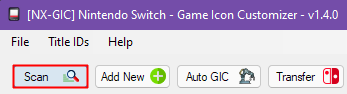
Once complete we will set the switch ip for ftp transfers within NX-CIG
File > Settings
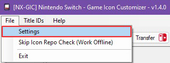
put your switch ip into the Switch IP Address textbox
UserName / Password credentials
SteamGridDB API Key
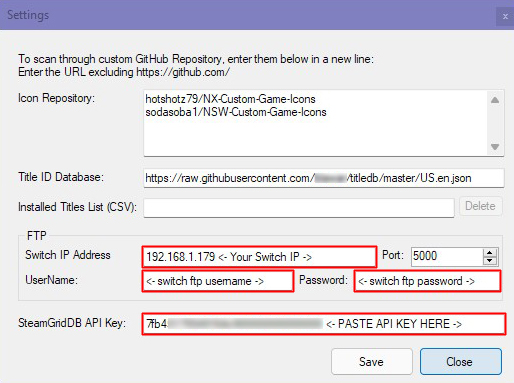
1.4.0: CLOSE AFTER SAVING
once you have saved all the details be sure to Close NX-GIC and re-open the application before you continue
this will fix the no login credentials found when you first try to open a FTP connection
Installing NX Title List Dumper ¶
with sys-ftpd-light running on the switch lets install NX Title List Dumper from nx-gic
Title IDs > Install NX Title List Dumper (NRO)
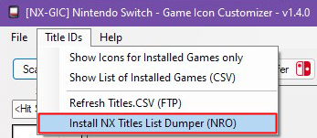
Follow the instructions on the popup.
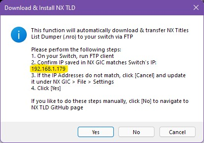
Our Switch IP Should Be here.
hit yes and the process will begin
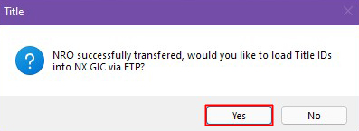
hit yes you will get a popup
Don't click anything yet:
leave this pop up open and move to the switch and follow the steps for NX Titles List Dumper 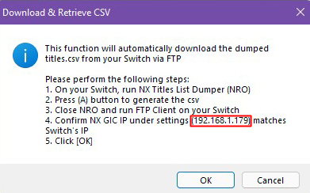
Using NX Titles List Dumper ¶
Once the nro is transferred load nx-titles-list-dumper from hbmenu
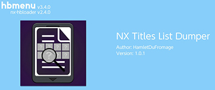

press to dump your installed title IDs
this will place a file into SD:/titles.csv once it's done
press to exit
once SD:/titles.csv is dumped you can click OK
and hit ok in NX-GIC
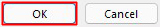
If everything is sucessful you will see the completed
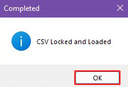
transfer failure?!
if the ftp transfer of titles.csv fails (mine unfortunately did)
place titles.csv from the root of your SD card into the same folder as NX-Game Icon Customizer.exe
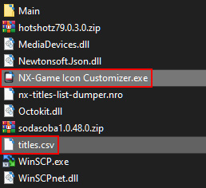
Auto NX-GIC ¶
Auto nx-gic can be used automatically select icons based off the installed titleIDs on your switch via titles.csv
from the NX Titles List Dumper homebrew
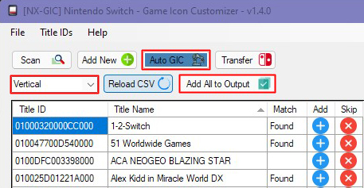
Click on Auto GIC to enable it
then from the drop down select the style to match your installed theme
in this example I've chosen vertical
now nx-gic will match all of the icons found in titles.csv to icons on the repo
click on Add All to Output to add the matching icons to the upload queue
Missing icons?
you may notice some icons aren't found or matched this can be due to 1 of 2 reasons
- The Icon Doesn't exist.
- The title ID you have is different from the title ID on the repo (US/EUR/JPN).
homebrew forwarders are usually not matched so you will have to manually change the TID in the output section you can also add icons individually auto-gic pics the first icon found.
my repo might have multiple variants for certain games, it might have older variations of a TID for homebrew between different icons
Showing Icons Based off TitleID ¶
you can show icons matching installed TIDs by clicking
Title IDs > show Icons for Installed Games only
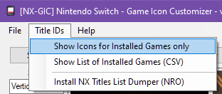
View A List of installed Games ¶
you may also individually look through each icon folder and use the CSV list to match icons by clicking
title IDs > Show List of Installed Games (CSV)
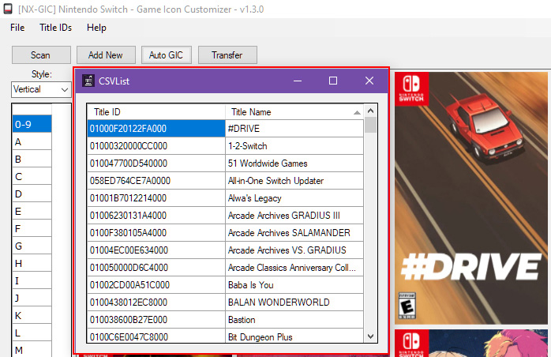
Editing your Output before tranferring ¶
It's possible to edit your output before begining to transfer files to the switch
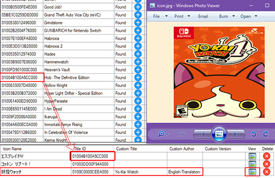
you can edit titleID in the output section just by copying Ctrl+C the titleID in the CSVlist and pasting Ctrl+V the over titleID in output with your new titleID.
if your output has a game with a title you're unsure of like a japanese title in the example above
you can click on the view button and the icon will open and show you the image in the queue
You can set a custom title / Author & Version which is excellent for Fan translations
editing in NX-GIC will make a config.ini file and place it in the same folder as the custom icon
[override_nacp]
name=my custom title name game
author=someone
display_version=X.X.X
you can see Yo-Kai Watch is renamed from japanese (妖怪ウォッチ) in the example below
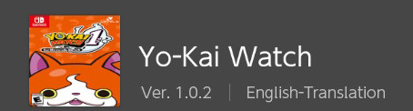
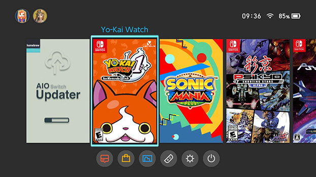
This isn't a permanent "rename" it works the exact same way the icon takeover does.
The majority of my repo is based on US TID
you can also use this blazing fast TID/Game search database https://titledblookup.stackblitz.io/
Transferring ¶
sys-ftpd-light should be enabled on your switch
when you are happy with your chosen icon(s) click
transfer
hopfully you have already setup the IP of your switch as previously shown, click the ftp method

click upload and you'll see the switch recieve the files, they're automatically transferred to the correct folders based off the titleID
in SDMC:/atmosphere/contents/[titleid]/icon.jpg

once you've finished transferring you will see success in green
You will need to reboot for icons to refresh
Recommended transfer method ¶
I recommend using the ftp method over mtp as i personally find ftp to be a lot faster, especially when you are bulk transferring custom icons, that's the method I have always used.